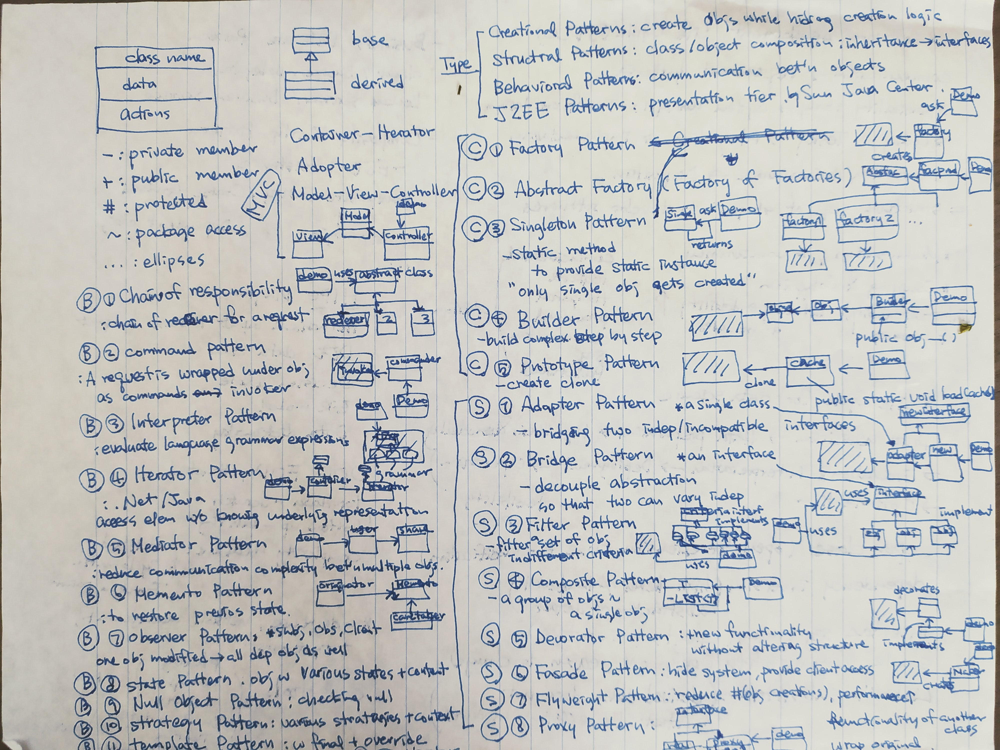

Helping Junior Data Scientists with Preparing Interviews and Finding Jobs
October 16, 2020, Posted by Heuna KimFrom 2019 to 2020 for two semesters, I participated in the course “data analytics for Python”, organized by ReDI School Berlin as a teacher. During the second semester, I started mentoring one of the students. I helped him especially apply for data-science-related jobs. Also I had many more chances to actively help some other friends, who want to become data scientists as fresh graduates. In the first part of this blog, I would like to share my impression of the current job market based on their situations. The second part is a revised version of the email that I have sent to my ReDI School mentee in October 2020. It contains the tips about the interview preparation for fresh data scientists, who are starting their careers.
Part 1: Recent Job Market for Junior Data Scientists Compared to 3-5 Years Ago
These are three points of my observations compared to 3-5 years ago:
- More companies know better what they want from and can expect from data scientists.
- Most positions require a narrower range of skills, that are more specialized according to their job descriptions.
- There are many more people who want to start careers in data science and companies want mostly only experienced data scientists.
A friend of mine who recently started as a junior data scientist told me a story: her uncle told her that she as a data scientist could just position herself as a team lead or a senior data scientist and easily demand a higher salary, because one cannot find many data scientists out there. It is somewhat true that the titles for data-science-related jobs are generally inflated compared to other technical positions. Probably it is because 1) the field is new so there are not many experienced people and 2) many of those people spent relatively longer time for their education.
On the other hand, the supply of the data-science-related job market has drastically increased and her uncle’s statement is no longer true. 3-5 years ago people having experiences with quantitative experiments and coming from diverse backgrounds, for example, psychology or politics, could get data science positions relatively easier than now. For the past few months, also probably with the combination of the current pandemic situation, many friends told me that over 100 applicants are shown in LinkedIn job advertisements for most of junior data scientist positions.
Also the requirements for most of these positions have become more clear and specialized for last 3-5 years. For example: big data experts, data engineers, machine learning scientists, data analysts, geo-spatial engineers, reinforcement learning experts, computer vision specialists, natural language specialists, data scientists for recommendation engines or for price forecasting, and so on; they are now more clearly distinguished from each other. I no longer see Hadoop, Tableau, R, tensorflow and SQL all in the same job description. It used to be the case 3-5 years ago.
Most of job descriptions nowadays clarify more specifically about the projects of the companies. Also these descriptions match better to the companies’ interests. I can see that it got harder for those who start out their data science careers now. But also while looking at those job descriptions, I imagine that they can probably improve on their skills faster in more focused working environments.
Part 2: Promised interview preparation list
This is a revised version of an email to my mentee with the same title. Hence I should mention that this is not a complete list for an interview preparation. Nevertheless I hope that this list is helpful to fresh job seekers in data science.
1. Interview Question Lists on the Internet
There are some lists of classical interview questions on the Internet. Be aware that many of the answers from those lists are not precisely correct. Also some of them are outdated and fit better to the job market situation 3-5 years ago. I believe that it is probably not necessary to go through all of these lists. Nevertheless, I think it is worthwhile to skim them quickly and check which topics you should get familiarized with more.
2. Useful Books
It is often most recommended to read Hands-On Machine Learning with Scikit-Learn, Keras, and TensorFlow, 2nd Edition by Aurélien Géron for quickly refreshing your knowledge before data science and machine learning related interviews.
If this book is too difficult for you, my suggestion for an easier book would be An Introduction to Statistical Learning with Applications in R. (You can download the free PDF file from the official website.) All the codes are in R in this book and these days R is used less and less in industry so I actually recommend this book only for the basic-level non-practical purpose.
3. SQL/Database, Software Engineering, Design Patterns, Object-oriented Programming Concepts, Big data (Hadoop, Kafka)
These topics are very broad by their own. Also I would regard them less as core skills for data-science-related jobs except for data engineers. Prepare these topics mainly by focusing on the job requirements of each specific position that you are interested in.
- Some more tips:
- If you want to evaluate your SQL skills, check out the SQL section in leetcode with the easy mode.
- Understanding and reviewing important Git commands is also a good idea if you are preparing these topics.
You can find some of my notes on these topics at the end of this blog post.
4. Study on your own CV
This is probably the most important part. In interviews, you will be potentially asked about anything written in your CV. Prepare to answer any questions confidently about your CV. In other words, I would recommend not to write keywords that you cannot explain well.
5. Keywords for You-Should-Know Topics
Here I added a list of general important keywords; in my opinion, an applicant of a data scientist position is expected to know these concepts. Please try to cover:
- Machine Learning
- Differences between Supervised Learning / Unsupervised Learning / Reinforcement Learning, differences between generative and discriminative models, differences between batch and online learning
- Differences between Overfitting / Underfitting, concepts of bias-variance dilemma, splitting training / validation / test set, cross-validation
- Examples of regression methods, metrics, differences between Ridge, Lasso, Elastic Net and why you want to use them
- Examples of classification methods, metrics (precision and recall, type I/II errors, confusion matrix, ROC, AUC), when to use Support Vector Machines (SVM) vs. when to use Random Forests, the kernel trick for SVM
- Examples of different ensemble techniques: bagging, boosting, stacking, when to apply them and their effects
- Examples of clustering methods
- The chain rule in Calculus, concepts of Stochastic Gradient Descent and backpropagation, the mechanism of activation functions (ReLU, Sigmoids) / convolutional-units / pooling, regulation methods (dropout, batch normalization, skipping connection) for Neural Network
- Difference between feed forward networks and recurrent networks and their examples
- the concept of Principal Component Analysis and autoencoder for the dimension reduction
It is good to know when to use these advanced topics below. It is relatively less expected for a junior data scientist to know them:
Sampling (MCMC, Gipps, Metropolis Hastings…), Expectation Maximization, Gaussian Process, General Adversarial Network, Conditional Random Field / Hidden Markov Model / Kalman filter, Autoregression / ARIMA (Time Series), Matrix Factorization, Collaborative Filtering, Graphical Models, Variational Inference, Topic modeling and Latent Dirichlet Allocation, Restricted Boltzmann Machine, Reinforcement-Learning-related topics
Python
- List comprehensions, generators/iterators, decorators
- (Advanced: context managers, properties, coroutines, closures)
- Sometimes you are asked to implement very simple codes for the concepts above e.g. max pooling or cross-validation, ReLU, a stride for a convolutional neural network
6. Notes for 3.
Theses notes are handwritten and not written for explaining the concept but as a summary. It is probably hard to learn everything from the notes only by reading them. Still you can hopefully capture important keywords or use them for looking up or for refreshing what you have learned already.
SQL

Objected-oriented Programming

Algorithms

Design Patterns 